GALERI PHOTO KEGIATAN
Dokumentasi resmi perjalanan program pendampingan, studi banding, expo & pameran, fasilitasi legalitas & kemitraan, serta pengadaan mesin di Rumah Produksi Natural Akademi.
-
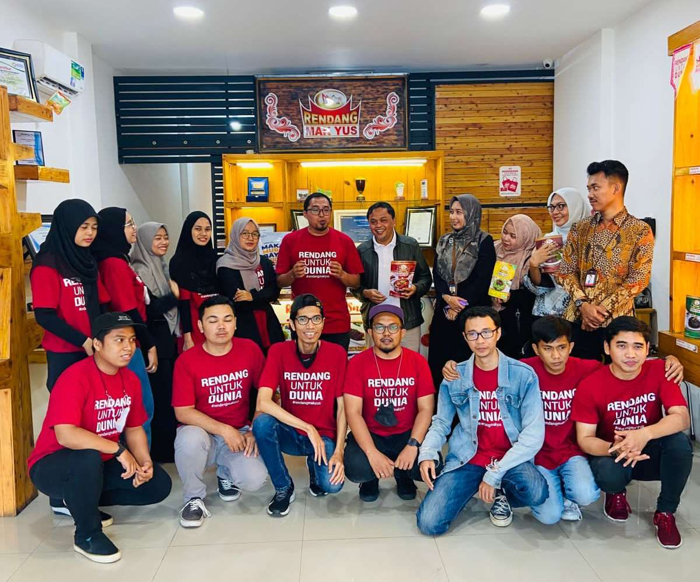
Studi BandingStudi Banding Sentra Rendang Payakumbuh
Payakumbuh, Sumatera Barat
-
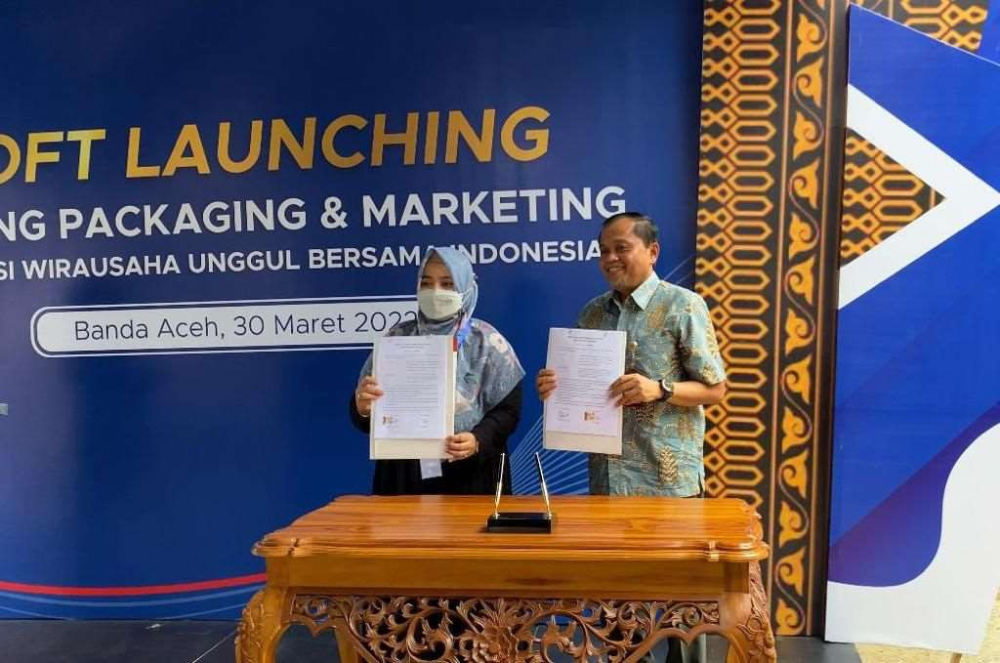
KemitraanSoft Launching Sharing Packaging & Marketing
WUBI Bank Indonesia Aceh
-
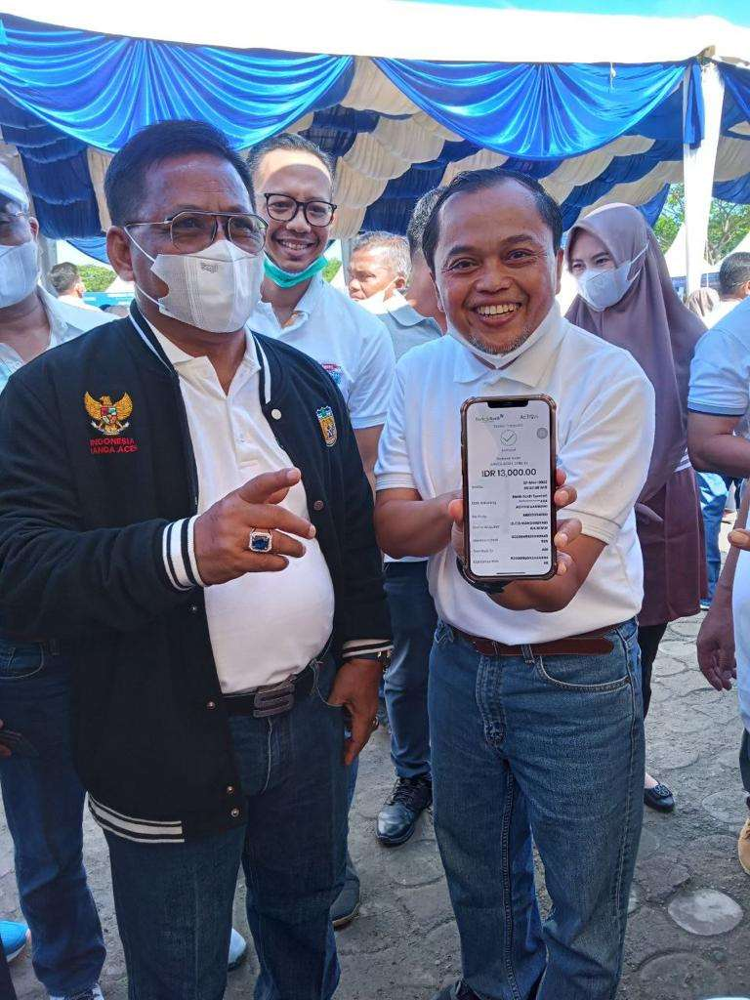
PameranMeugah Festival Aceh & SERBU QRIS
Banda Aceh
-
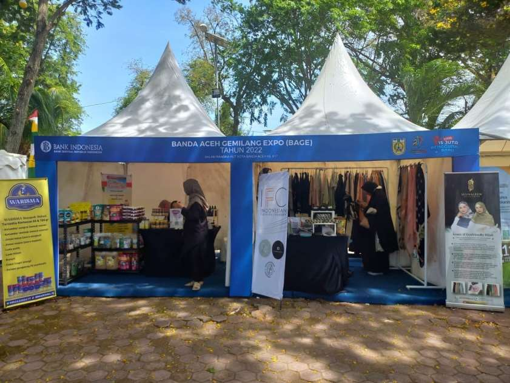
PameranBazar Banda Aceh Gemilang Expo
Pemko Banda Aceh
-
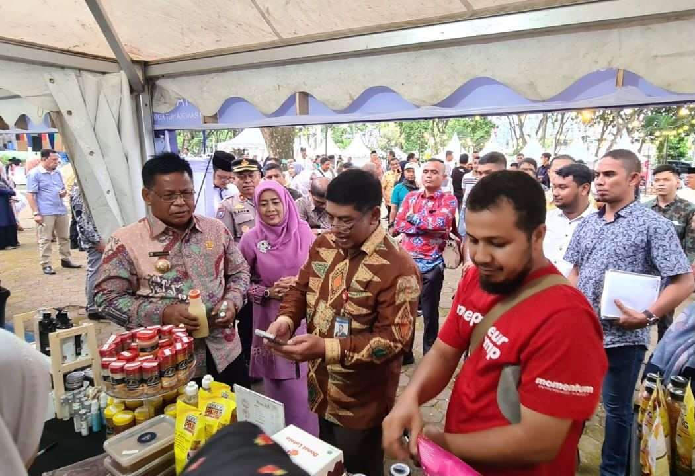
ProduksiKitchen Tour & Simulasi Mesin Packaging
Rumah Produksi Natural Akademi
-
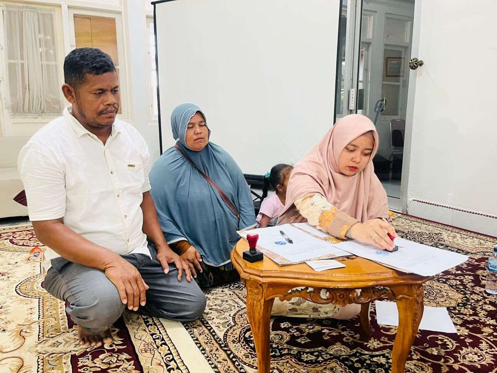
KemitraanMoU Koperasi Samudera Mandiri Leupung
Leupung, Aceh Besar
-
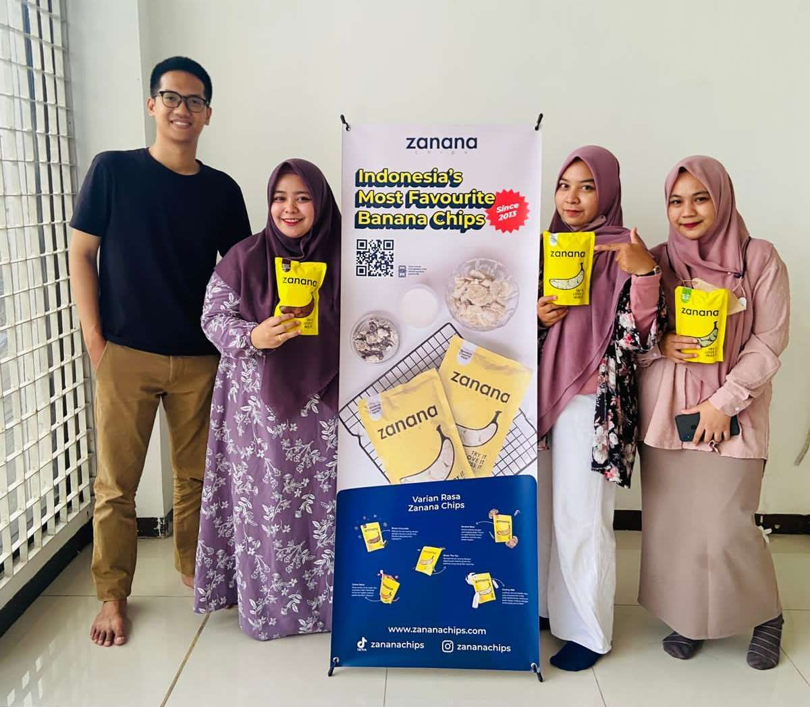
Studi BandingKunjungan Ekosistem UMKM Zanana Bandung
Bandung, Jawa Barat
-
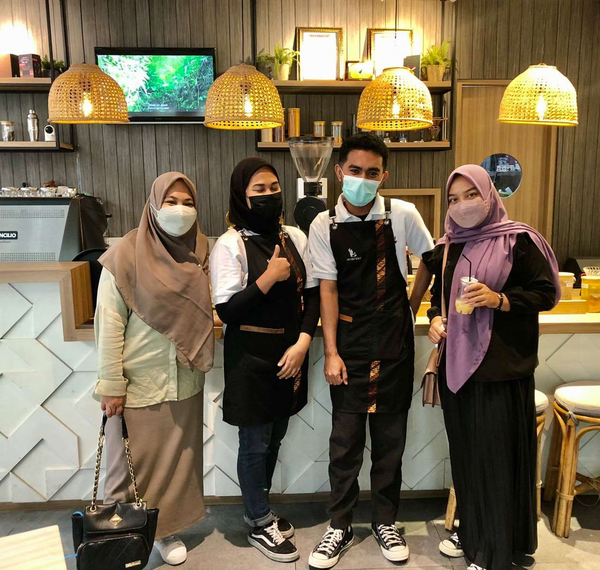
Studi BandingStudi Inovasi Herbal di Acaraki Jamu
Kota Tua, Jakarta
-
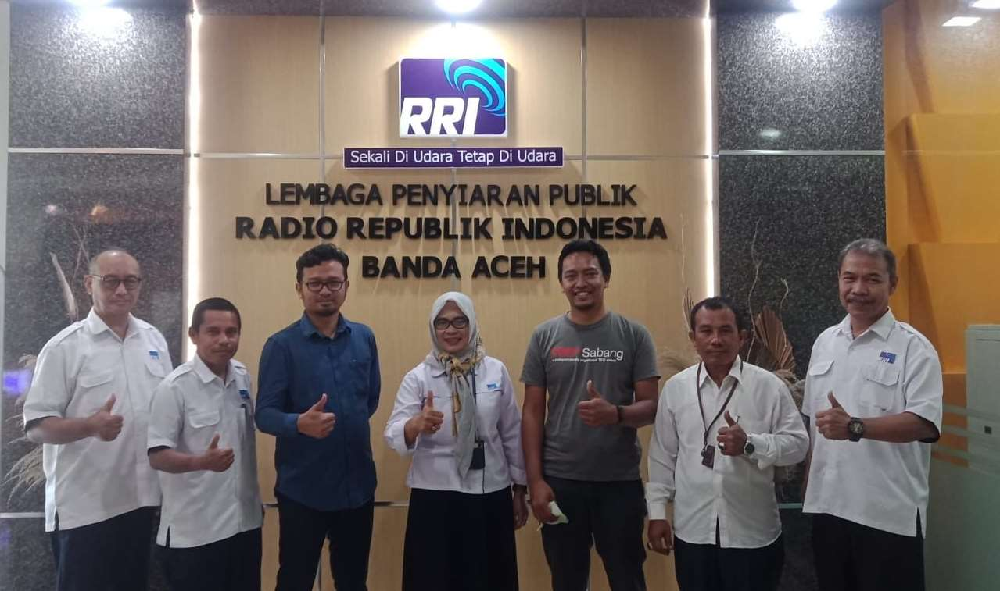
KemitraanKerjasama Program bersama LPP RRI Banda Aceh
LPP RRI Banda Aceh
-
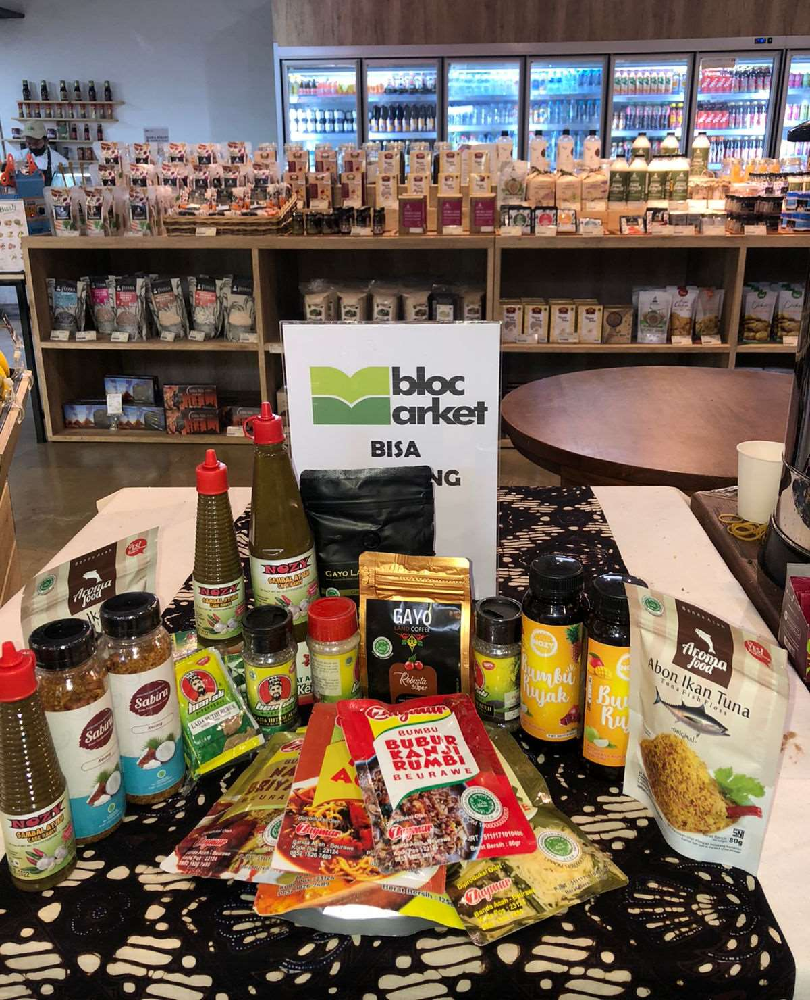
Kemitraan PasarDistribusi Produk ke M Bloc Market Jakarta
M Bloc, Jakarta Selatan
-
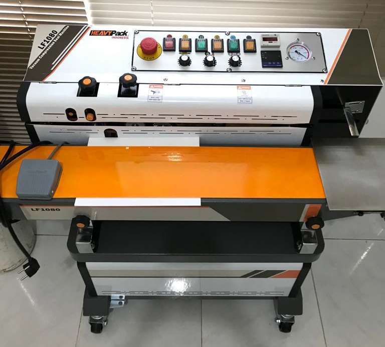
ProduksiFasilitas Mesin Continuous Band Sealer
Rumah Produksi Natural Akademi
-
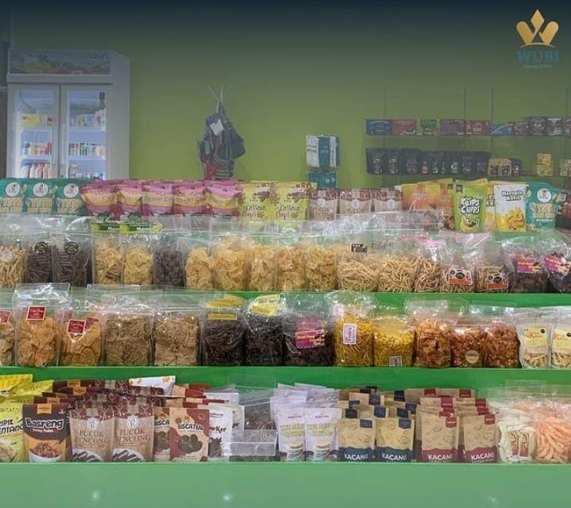
PameranLocal Trend Pop-Up Show di Plaza Aceh
Plaza Aceh, Banda Aceh
-
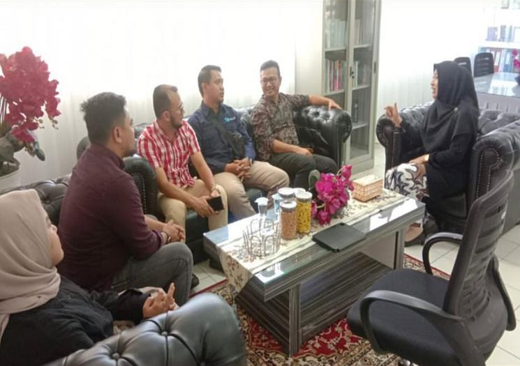
Akses PasarGerai Binaan di Bandara Sultan Iskandar Muda
Bandara Internasional SIM
-
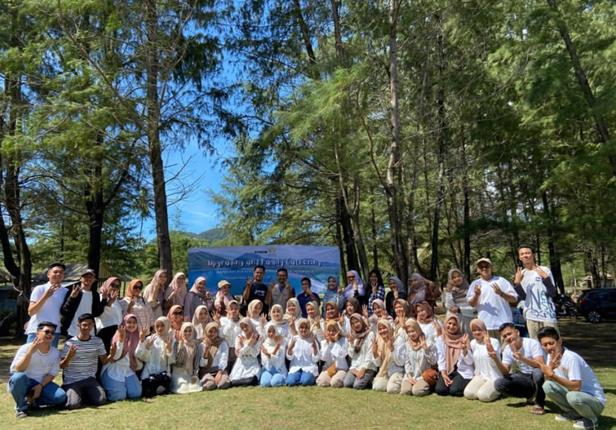
KemitraanMoU Kerjasama Pendidikan bersama SMKN 1
SMKN 1 Banda Aceh
-
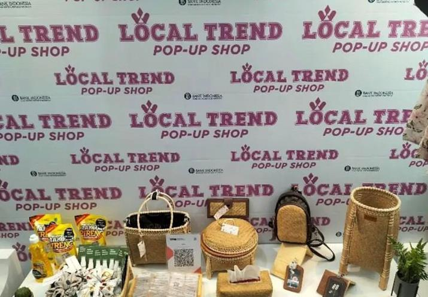
PameranMeulaboh Digital Festival
Meulaboh, Aceh Barat
-
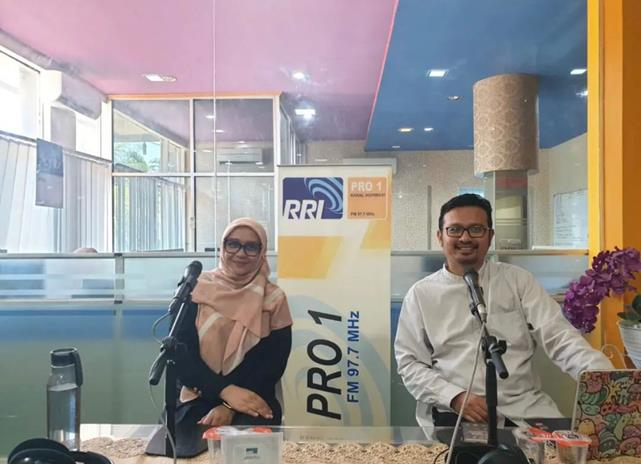
Kemitraan & EdukasiTalkshow UMKM di Pro 1 RRI Banda Aceh
Studio Pro 1 RRI Banda Aceh